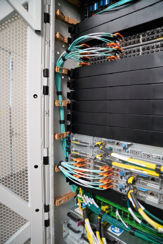
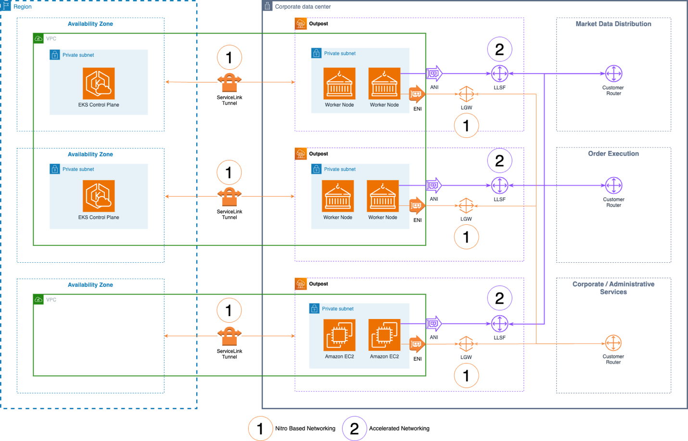

Trong thế giới công nghệ tài chính phát triển chóng mặt ngày nay, chỉ cần một mili giây cũng có thể tạo nên sự khác biệt giữa thành công và thất bại trong các giao dịch tài chính. Nhu cầu giao dịch tần suất cao, xử lý dữ liệu thị trường theo thời gian thực và các giao dịch tài chính phức tạp đòi hỏi một cơ sở hạ tầng mang lại hiệu suất, độ tin cậy và tính công bằng vượt trội. AWS đang đáp ứng những nhu cầu này thông qua một danh mục mới: Amazon Elastic Compute Cloud (Amazon EC2) các trường hợp có tính năng kết nối mạng tăng tốc trên thế hệ thứ hai AWS Outposts Các giá đỡ này bao gồm các phiên bản Bmn-sf2e cho độ trễ cực thấp và hiệu suất xác định, và các phiên bản Bmn-cx2 cho thông lượng cao và độ trễ thấp.
Các máy chủ Outposts với khả năng kết nối mạng tăng tốc EC2 bao gồm các máy chủ bare-metal, kết nối mạng tăng tốc, khả năng đa hướng L2/L3 gốc, hỗ trợ Giao thức Thời gian Chính xác (PTP) và cáp có chiều dài bằng nhau, tất cả được thiết kế để giải quyết những thách thức đặc thù mà các bên tham gia thị trường, sàn giao dịch và địa điểm giao dịch phải đối mặt. Các giải pháp của chúng tôi không chỉ đáp ứng các yêu cầu hiệu suất nghiêm ngặt của thị trường tài chính hiện đại mà còn tuân thủ các tiêu chuẩn quy định toàn cầu, tạo điều kiện tiếp cận công bằng cho mọi bên tham gia. Trọng tâm trong dịch vụ của chúng tôi là khái niệm ổn định tĩnh, một nguyên tắc cho phép vận hành liên tục ngay cả khi xảy ra sự cố hỏng hóc linh kiện hoặc gián đoạn cục bộ. Phương pháp này, kết hợp với công nghệ tiên tiến của chúng tôi, tạo nên nền tảng vững chắc cho các ứng dụng tài chính khắt khe nhất.
Nasdaq đã chuyển đổi thành công hệ thống giao dịch cốt lõi của ba thị trường Bắc Mỹ sang cơ sở hạ tầng thị trường đám mây sử dụng AWS Outposts với mạng lưới tăng tốc các phiên bản Amazon EC2, với quy mô thị trường lớn nhất xử lý lên đến 36 tỷ tin nhắn mỗi ngày. Cơ sở hạ tầng thị trường đám mây này mang lại độ trễ thấp (dưới 2 micro giây) cho các quy trình từ đầu đến cuối và từ lệnh đến giao dịch, cùng với cải thiện hiệu suất lên đến 10% về độ trễ khứ hồi. Dựa trên thành công của việc hiện đại hóa thị trường Nasdaq, Nasdaq và AWS rất vui mừng được giới thiệu sự đổi mới này đến thị trường vốn toàn cầu như một phần của chương trình hợp tác mới được công bố gần đây. modernization blueprint.. – Nasdaq
Hãy cùng khám phá các thành phần này để hiểu cách chúng kết hợp với nhau để tạo nên cơ sở hạ tầng hiệu suất cao, tuân thủ và linh hoạt cho khối lượng công việc giao dịch, sau giao dịch và phân phối và tiêu thụ dữ liệu thị trường theo thời gian thực.
Giao dịch tài chính yêu cầu độ trễ và độ trễ tối thiểu. Các phiên bản EC2 mạng được tăng tốc này có sẵn dưới dạng phiên bản máy tính bare metal, đáp ứng trực tiếp các yêu cầu về hiệu suất. Các phiên bản này hoạt động mà không cần ảo hóa, giúp các nhà phát triển kiểm soát mức độ tương thích CPU cho ứng dụng của họ. Việc kiểm soát này cho phép tối ưu hóa Truy cập Bộ nhớ Không Đồng nhất (NUMA), giúp giảm thời gian truy cập bộ nhớ và nâng cao hiệu suất tổng thể.
Thị trường tài chính phụ thuộc vào các mạng hiệu suất cao cho phép chuyển đổi tài sản thành tiền mặt. Các mạng riêng này phải đảm bảo quyền truy cập bình đẳng và công bằng cho tất cả người tham gia, đồng thời duy trì độ trễ tối thiểu. Kiến trúc mạng bare metal mới của chúng tôi đáp ứng các yêu cầu này bằng các card giao diện mạng (NIC) chuyên dụng được kết nối trực tiếp với các thiết bị chuyển mạch trên cùng của rack. Chúng là một mạng vật lý thứ cấp độc lập với Amazon Virtual Private Cloud (VPC) tại mỗi Trạm Tiền đồn. Thiết kế này cho phép tham gia trực tiếp vào các mạng lưới tài chính tư nhân, mang lại hiệu suất mà các thị trường này yêu cầu.demand.
Các sàn giao dịch và địa điểm giao dịch sử dụng IP multicast để phát dữ liệu thị trường theo thời gian thực (báo giá, giao dịch, cập nhật sổ lệnh) đến hàng nghìn người đăng ký cùng lúc. Bằng cách tận dụng nền tảng mạng cơ bản, các địa điểm này có thể loại bỏ chi phí thiết lập kết nối riêng lẻ với từng người tham gia thị trường, đồng thời tuân thủ các yêu cầu tiếp cận thị trường công bằng và bình đẳng. Mạng bare metal của chúng tôi bao gồm một nền tảng chuyển mạch chuyên dụng với khả năng multicast lớp 2 và lớp 3 (L2/L3). Mạng lưới duy trì tình trạng đăng ký vượt mức bằng không trên tất cả các đường truyền vật lý, đảm bảo hiệu suất nhất quán cho mọi người tham gia.
Giao thức Thời gian Chính xác (PTP) đồng bộ hóa hệ thống giao dịch với độ chính xác đến từng nano giây, cho phép sắp xếp thứ tự lệnh chính xác trong hệ thống giao dịch. Mức độ đồng bộ hóa này rất quan trọng để duy trì thứ tự ưu tiên lệnh chính xác trong các thị trường biến động nhanh và ngăn ngừa tranh chấp về việc lệnh nào đến trước.
Thị trường tài chính toàn cầu được quản lý bởi các quy định đòi hỏi quyền tiếp cận công bằng cho tất cả người tham gia. Tại Hoa Kỳ, Quy định NMS (Hệ thống Thị trường Quốc gia) yêu cầu các sàn giao dịch phải cung cấp quyền tiếp cận không phân biệt đối xử. Tương tự, tại châu Âu, Chỉ thị II về Thị trường Công cụ Tài chính (MiFID II) cũng thực thi quyền tiếp cận công bằng và bình đẳng đến các địa điểm giao dịch. Các quy định này phản ánh xu hướng toàn cầu giữa các khu vực pháp lý lớn nhằm duy trì sự công bằng điều kiện thị trường. Để tuân thủ các yêu cầu về tính công bằng này, giải pháp của chúng tôi sử dụng các phiên bản Amazon EC2 được kết nối với mạng lưới tài chính thông qua hệ thống cáp có chiều dài bằng nhau. Phương pháp này đảm bảo tất cả người tham gia đều có quyền truy cập thống nhất vào các công cụ khớp lệnh được lưu trữ trên EC2, qua đó hỗ trợ tuân thủ quy định và tính toàn vẹn của thị trường.
Sau đây là hình ảnh AWS Outpost Rack với kết nối mạng được tăng tốc. Các cáp quang màu xanh lam đều có chiều dài bằng nhau, kết nối chúng với các switch Top of Rack (TOR) ở phía trên.

Hình 1: Ảnh chụp giá đỡ AWS Outposts với mạng lưới được tăng tốc
LSEG Markets sẽ sử dụng AWS Outposts như một phần chiến lược trong hoạt động kinh doanh ngoại hối của mình để cung cấp các giải pháp giao dịch độ trễ thấp, linh hoạt và có khả năng mở rộng. Các giải pháp này sử dụng các dịch vụ cốt lõi của AWS để đưa ra thị trường các tính năng mới đột phá. – LSEG

Hình 2 – Kiến trúc của các mô hình triển khai AWS Outposts phổ biến
Hình minh họa trên mô tả các mô hình triển khai AWS Outposts phổ biến được quan sát thấy trên nhiều khách hàng dịch vụ tài chính. Hình minh họa giới thiệu ba cấu hình Outposts, mỗi cấu hình được thể hiện riêng biệt. Hai trong số các Outposts này sử dụng Amazon Elastic Kubernetes Service (EKS). Mặt phẳng điều khiển mở rộng từ Vùng AWS trong khi các nút công nhân hoạt động cục bộ trên các Outpost. Outpost thứ ba, được hiển thị ở cuối hình minh họa, chỉ tận dụng các phiên bản EC2 được tăng tốc kết nối mạng.
Cấu hình này có thể cung cấp khả năng tính toán độ trễ cực thấp, duy trì tuân thủ quy định thông qua xử lý dữ liệu tại chỗ và mang lại trải nghiệm kết hợp nhất quán. Sơ đồ thể hiện các khả năng tối ưu hóa hiệu suất, các tính năng bảo mật nâng cao thông qua hệ thống Nitro và tính linh hoạt được cung cấp thông qua sự kết hợp giữa khối lượng công việc được chứa trong container và các phiên bản EC2 bare metal. AWS Outposts có thể cung cấp giải pháp cơ sở hạ tầng toàn diện được thiết kế riêng cho nhu cầu đặc thù của ngành dịch vụ tài chính.
Các công ty thị trường vốn tìm kiếm sự gần gũi với các sàn giao dịch tài chính và các nhà cung cấp thanh khoản để đạt được lợi thế cạnh tranh. Sự gần gũi này giúp giảm độ trễ khi tiếp nhận dữ liệu thị trường và thực hiện lệnh, giúp các công ty phản ứng nhanh chóng với những thay đổi của thị trường. AWS Outposts cho phép các bên tham gia đặt giải pháp đám mây của họ gần các trung tâm tài chính quan trọng này. Các phiên bản mạng máy chủ vật lý (BMN) của chúng tôi có thể kết nối trực tiếp với các cơ sở đồng đặt máy chủ của sàn giao dịch, tích hợp với cơ sở hạ tầng tài chính hiện có. Sự kết hợp giữa khoảng cách gần và kết nối trực tiếp này giúp tối đa hóa tốc độ và hiệu quả cho các bên tham gia thị trường.
AWS định nghĩa tính ổn định tĩnh là một nguyên tắc vận hành cơ bản, trong đó thiết kế hệ thống bao gồm khả năng tiếp tục hoạt động bình thường ngay cả khi các thành phần bị lỗi, mà không cần sự can thiệp ngay lập tức của con người hoặc các hành động khôi phục tự động. Các rack AWS Outposts với các phiên bản EC2 kết nối mạng tăng tốc tích hợp tính ổn định tĩnh như một thành phần chủ chốt. Bằng cách giảm thiểu tất cả các phụ thuộc vào Vùng AWS và chỉ cung cấp lưu trữ phiên bản, với khởi động cục bộ, chúng tôi đảm bảo rằng bất kỳ sự gián đoạn nào đối với một dịch vụ đang chạy trong Vùng của chúng tôi đều không ảnh hưởng đến hoạt động của bất kỳ ứng dụng nào đang chạy trên các phiên bản EC2 kết nối mạng tăng tốc. Với sự hợp tác của khách hàng, chúng tôi đã thử nghiệm thành công các phiên bản này hoạt động trong hơn một tuần khi tạm thời ngắt kết nối khỏi Vùng, với các ứng dụng được thiết kế tốt.
Các nguyên tắc thiết kế cốt lõi tạo nên nền tảng của các dịch vụ đám mây hiện đại, nhấn mạnh tính nhất quán trong mọi tương tác dịch vụ và một Kiến trúc Hướng Dịch vụ (SOA) mạnh mẽ. Các dịch vụ này, được xây dựng với tư duy API-first, đảm bảo mọi tính năng đều có thể truy cập được bằng lập trình trước khi được triển khai trong giao diện người dùng. Bảo mật là một phần của thiết kế ngay từ đầu chứ không phải được thêm vào sau đó.
Kiến trúc kỹ thuật dựa trên các dịch vụ độc lập, dạng mô-đun với ranh giới và trách nhiệm được xác định rõ ràng. API triển khai các mẫu và quy ước đặt tên nhất quán, trong khi các cơ chế mã hóa và kiểm soát truy cập toàn diện bảo vệ dữ liệu và tài nguyên. Kiến trúc hỗ trợ các chức năng hướng sự kiện và cung cấp nhiều mẫu tích hợp khác nhau để kết nối với các hệ thống và dịch vụ khác.
Ngành dịch vụ tài chính đòi hỏi các giải pháp cơ sở hạ tầng mang lại hiệu suất vượt trội, đồng thời vẫn tuân thủ nghiêm ngặt các quy định và đảm bảo quyền truy cập công bằng cho tất cả người tham gia. Các tủ rack AWS Outposts với các phiên bản EC2 kết nối mạng được tăng tốc đáp ứng những thách thức này bằng cách kết hợp khả năng của các phiên bản máy chủ vật lý (bare metal), các tính năng kết nối mạng chuyên biệt và cơ chế định thời chính xác. Thông qua các phiên bản EC2 kết nối mạng được tăng tốc, hỗ trợ đa hướng gốc, đồng bộ hóa PTP và cáp có chiều dài bằng nhau, chúng tôi cung cấp một nền tảng xử lý các ứng dụng tài chính đòi hỏi khắt khe nhất đồng thời đáp ứng tuân thủ quy định.
Nguyên tắc ổn định tĩnh làm nền tảng cho kiến trúc của chúng tôi đảm bảo khả năng phục hồi vận hành, trong khi khả năng kết nối gần và các tùy chọn kết nối trực tiếp của chúng tôi cho phép các công ty duy trì lợi thế cạnh tranh. Bằng cách tận dụng các giao diện AWS Console và API quen thuộc, các tổ chức có thể tích hợp các khả năng chuyên biệt này vào quy trình làm việc hiện có của mình, đồng thời duy trì tính bảo mật và tính nhất quán mà họ mong đợi từ các dịch vụ đám mây.
Khi thị trường tài chính tiếp tục phát triển và nhu cầu về độ trễ thấp hơn cùng độ tin cậy cao hơn ngày càng tăng, các giá đỡ AWS Outposts với các phiên bản EC2 kết nối mạng được tăng tốc luôn sẵn sàng hỗ trợ thế hệ đổi mới tài chính tiếp theo. Thông qua cam kết về hiệu suất, tính công bằng và tuân thủ quy định, chúng tôi đang trao quyền cho các tổ chức tài chính xây dựng và vận hành các hệ thống quan trọng một cách tự tin trong môi trường thị trường ngày càng năng động.